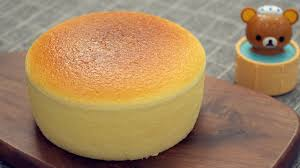

Homepage
Fluffly Jiggly Japanese Cheesecake

Description
We've all seen this cheesecake and wondered how it's made. So, now's the time to learn the art of crafting a fluffy and jiggly Japanese cheesecake at home. This classic Japanese dessert is a delightful fusion of lightness and creaminess, achieved through the meticulous combination of egg yolk custard with whipped meringue to create that signature bounce. Adding cream cheese, butter, and milk to the custard provides a rich and indulgent dimension to each bite. With patience and precision, you'll master the techniques to achieve the perfect balance of airy texture and decadent taste in every slice of this beloved Japanese treat.
Ingredients
- 7 tablespoons butter
- 4 oz cream cheese
- 1/2 cup milk
- 8 eggs, yolk
- 1/4 cup flour
- 1/4 cup cornstarch
- 13 large egg whites
- 2/3 cup granulated sugar
- hot water, for baking
- powdered sugar, for serving
- 1 pt Starberries, for serving
Steps
- Preheat the oven to 320°F (160°C).
- In a small pot over medium heat, whisk together the butter, cream cheese, and milk until melted and smooth. Remove from the heat and let cool.
- In a large bowl, whisk the egg yolks until smooth, then slowly drizzle in the cream cheese mixture, stirring until evenly combined.
- Sift in the flour and the cornstarch, whisking to make sure there are no lumps.
- In another large bowl, beat the egg whites with a hand mixer until soft peaks form. Gradually add the sugar while continuing to beat until stiff peaks form.
- Fold about ¼ of the egg whites and into the yolk mixture, then repeat with the remaining egg whites until the batter is evenly combined.
- Grease the bottom of a 9 x 3-inch (23 x 7.5 cm) round cake pan, then line the bottom and sides with parchment paper. If using a springform pan, make sure to wrap the bottom and sides completely in foil twice to prevent any leakage.
- Pour the batter into the pan and shake to release any large air bubbles.
- Place the pan into a larger baking dish lined with 2 paper towels at the bottom. The paper towels ensure that the heat is distributed evenly along the bottom of the pan. Fill the larger pan about 1-inch (2-cm) high with hot water.
- Bake for 25 minutes, then reduce the heat to 285°F (140°C), and bake for another 55 minutes, until the cake has risen to almost double its original height.
- Remove from oven, and carefully invert the cake onto your dominant hand and peel off the paper. Be extremely careful, the cake will be hot. You can also invert the cake onto a plate, but this will cause the cake to deflate more.
- Dust the top of the cake with powdered sugar, then slice and serve with strawberries while still warm!
Recipe Source